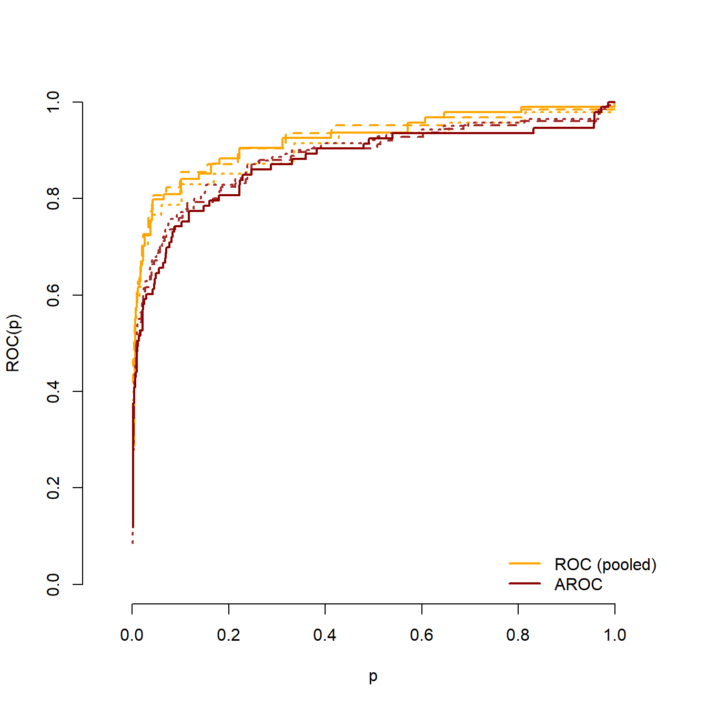

Comparing ROC and AROC curves from the same marker: a practical example
This is a practical example to show how to use the functions provided in the functions.R script. Its part of the supplementary material for the paper “A new test for assessing the covariate effect in ROC curves”.
First steps
Packages
First we load the packages that will be needed. They are used either to load the data or to draw graphical representations. They are not actually needed to perform the test.
# library(refreg) # for loading the datalibrary(viridis) # for color selection
Cargando paquete requerido: viridisLite
library(hdrcde) # for estimating the conditional densities
This is hdrcde 3.4
library(ggplot2) #for the graphical representationslibrary(ggExtra) #for the graphical representationslibrary(kableExtra) # for presenting the tables
Loading the functions
We load the functions that will be used here. Make sure that the functions.R file is in the working directory.
source("functions.R")
The data
We use the aegis dataset contained in the refreg package (note that the refreg needs to be installed previously).
data("aegis", package ="refreg")head(aegis)
id gender age dm fpg hba1c fru
1 1 male 47 no 101 6.0 222
2 2 male 43 no 101 5.4 247
3 3 male 65 yes 166 8.4 473
4 4 female 56 yes 154 7.1 378
5 5 female 72 no 89 5.3 220
6 6 male 67 no 97 5.8 196
This dataset contains information for 1516 patients suspected of having diabetes. Of the 7 variables that it includes, we will be focusing on these three:
dm: Diabetes mellitus indicator (no, and yes). The healthy/diseased indicator.
fpg: the diagnostic marker (fasting plasma glucose levels in mg/dL).
At the sight of the graphics it seems reasonable that no differences were detected among the two curves.
We can also compare the estimations obtained with the different splitting of the sample:
plot(results.1$p,results.1$ROC,type="l",col ="orange",lwd=2,lty=1,xlab="p",ylab="ROC(p)",xlim=c(0,1),ylim=c(0,1),axes =FALSE, asp =1)axis(1)axis(2)points(results.2$p, results.2$ROC, type ="l", col ="orange", lty =2, lwd =2)points(results.3$p, results.3$ROC, type ="l", col ="orange", lty =3, lwd =2)points(results.1$p, results.1$AROC, type ="l", col ="brown", lwd =2)points(results.2$p, results.2$AROC, type ="l", col ="brown", lty =2, lwd =2)points(results.3$p, results.3$AROC, type ="l", col ="brown", lty =3, lwd =2)points(results.1$p,results.1$AROC,type="l", col="darkred",lwd=2, lty=1)legend("bottomright",legend=c("ROC (pooled)", "AROC"),lwd=2,lty=1, col=c("orange", "darkred"),bty ="n")

References
Fanjul-Hevia, A., Pardo-Fernández, J.C., González-Manteiga, W. (2024) A new test for assessing the covariate effect in ROC curves. ArXive preprint [link].